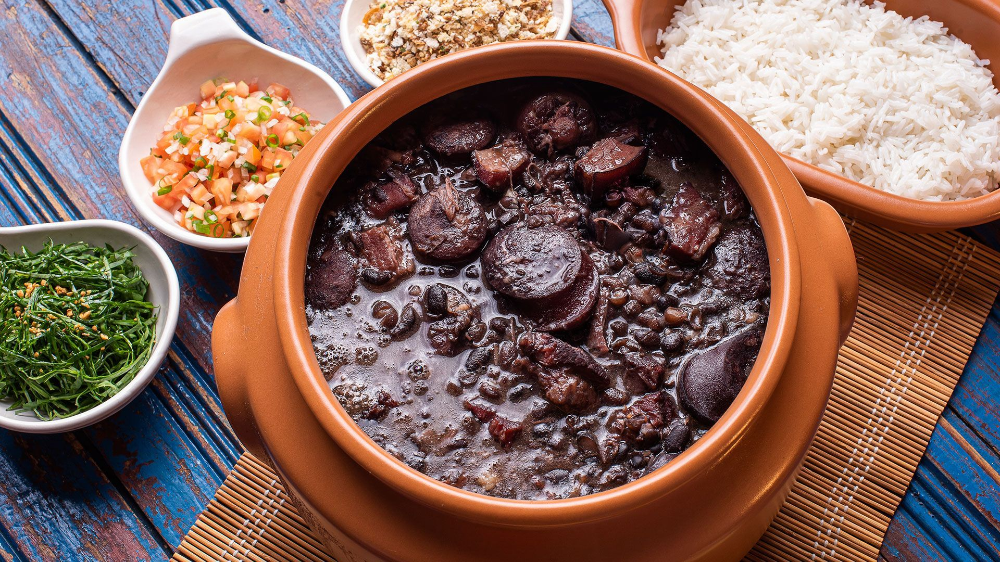

Feijoada

Descrição
Feijoada é uma designação portuguesa a um prato da culinária transmontana que se popularizou
também nos demais países lusófonos como Brasil, Angola, Moçambique, Timor-Leste e Macau.
No Brasil, é feita da mistura de feijões pretos com vários tipos de carne de porco e de boi.
É servida com farofa, arroz branco, couve refogada e laranja fatiada, entre outros acompanhamentos.
Esta versão da feijoada é conhecida como feijoada à brasileira
Ingredientes
- 1 Kg de feijão preto
- 70 g de orelha de porco
- 70 g de pé de porco
- 50 g de lombo de porco
- 150 g de lingüiça portuguesa
- 100 g de carne seca
- 70 g de rabo de porco
- 100 g de costelinha de porco
- 100 g de paio
Modo de Preparo
- Coloque as carnes de molho por 36 horas ou mais, vá trocando a água várias vezes,
se for ambiente quente ou verão, coloque gelo por cima ou em camadas frias.
- Coloque para cozinhar passo a passo: as carnes duras, em seguida as carnes moles
- Quando estiver mole coloque o feijão, e retire as carnes.
- Finalmente tempere o feijão.